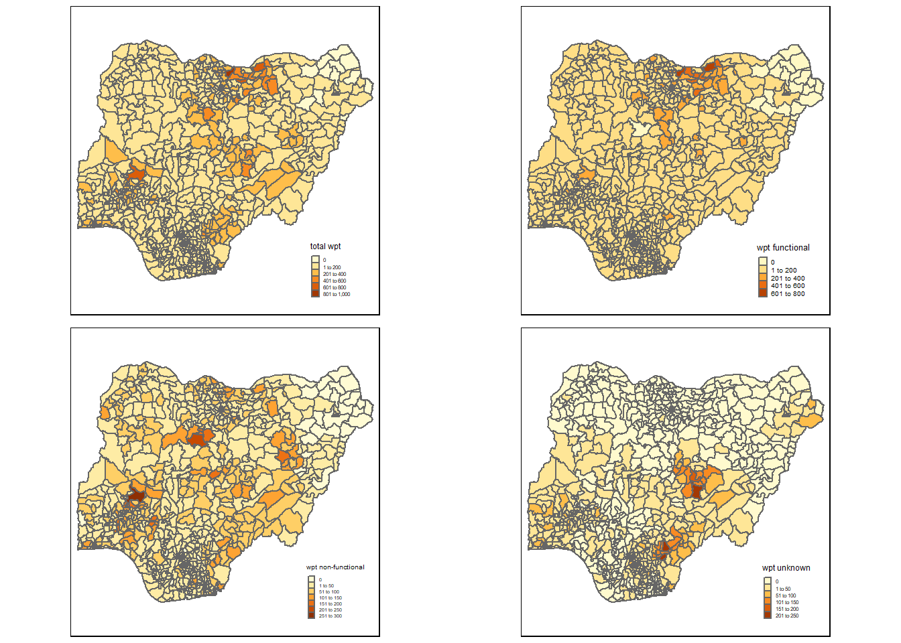
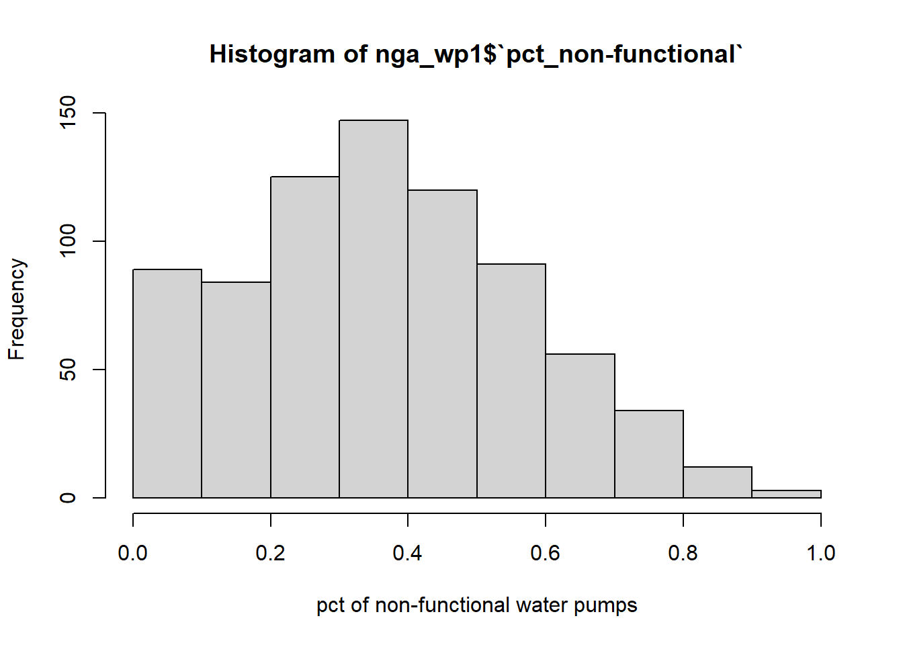
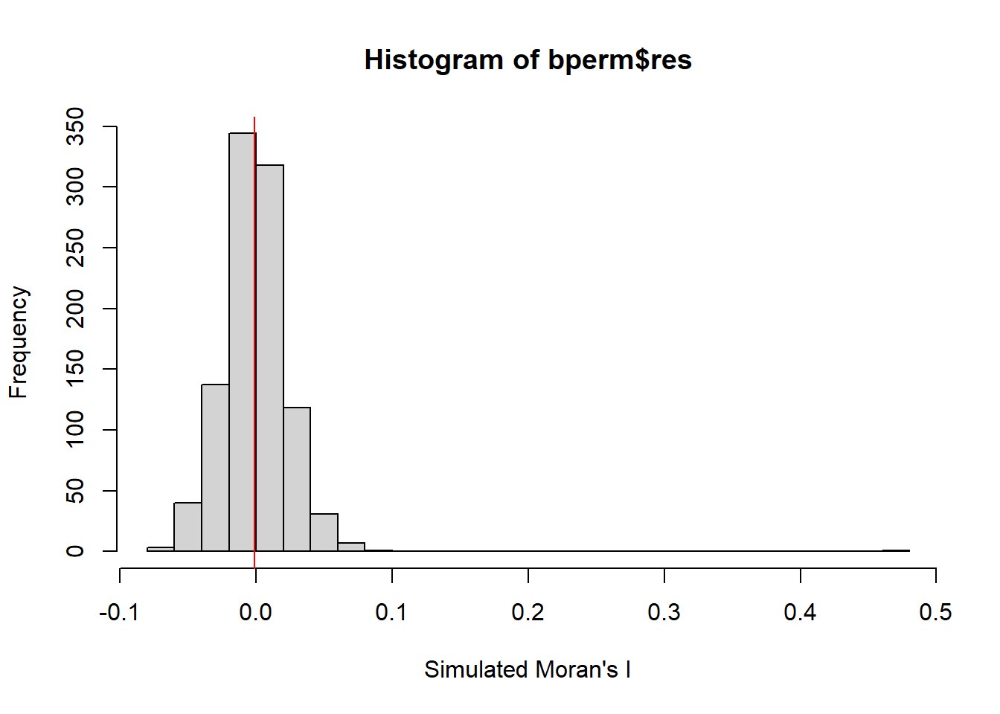
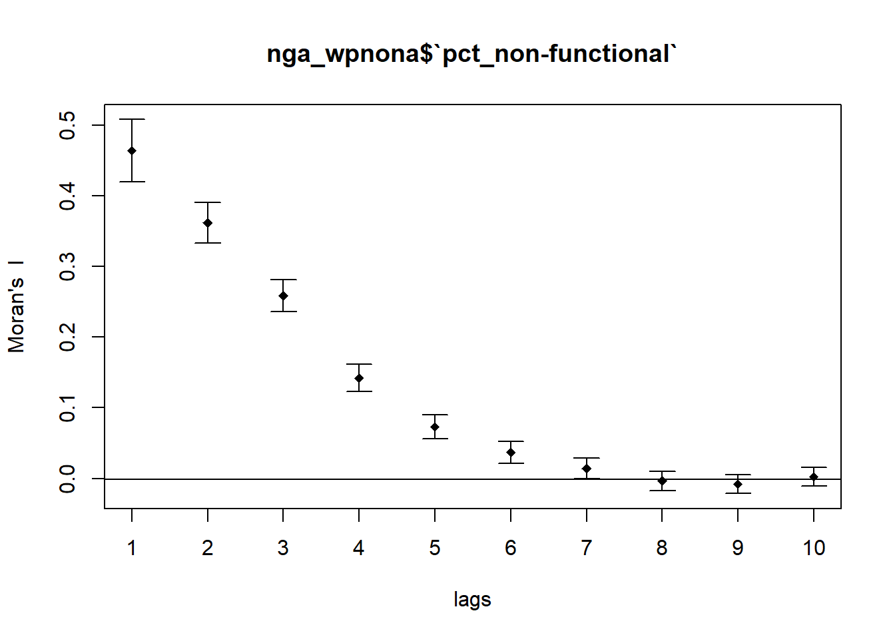
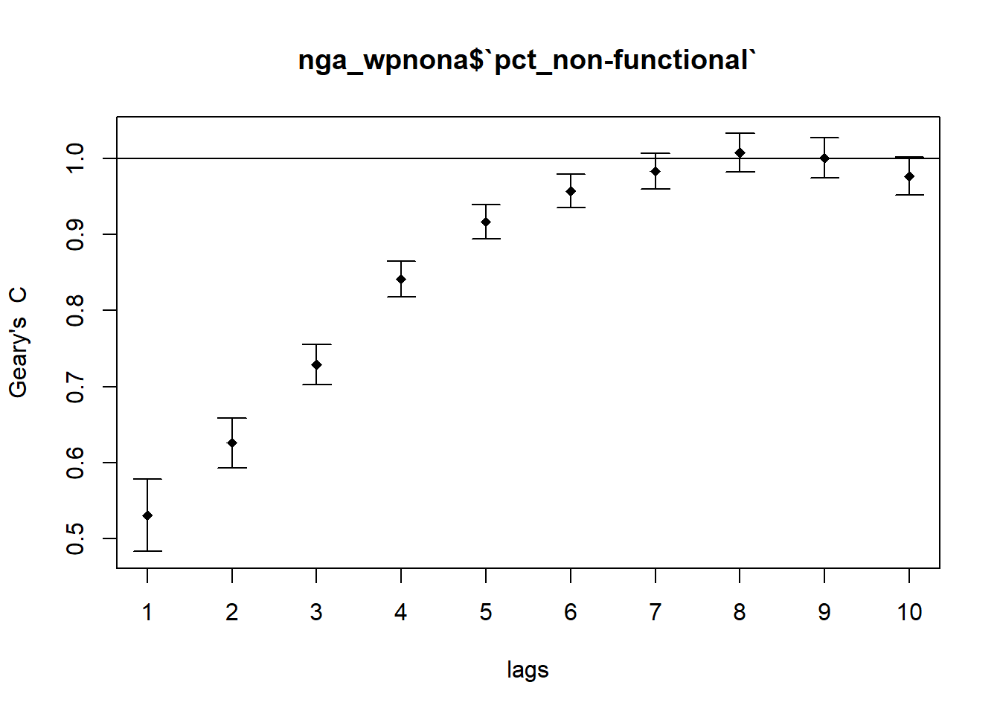
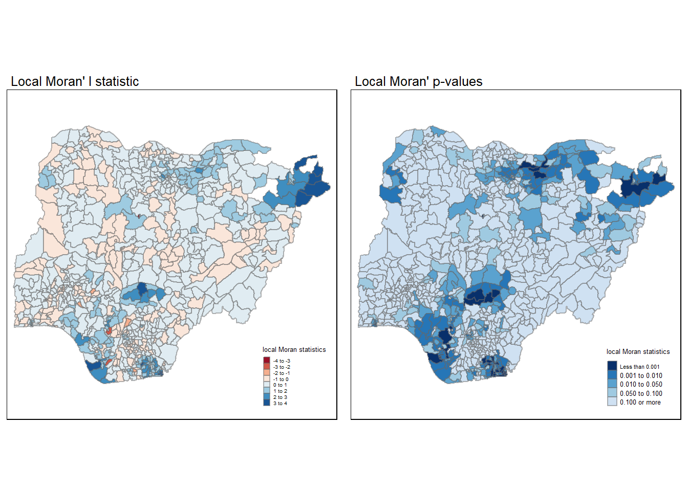
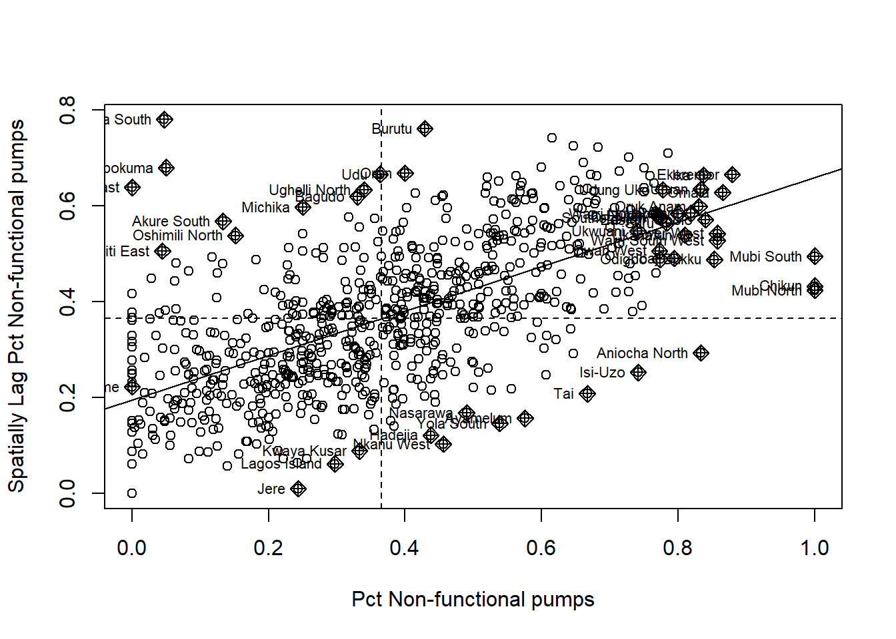
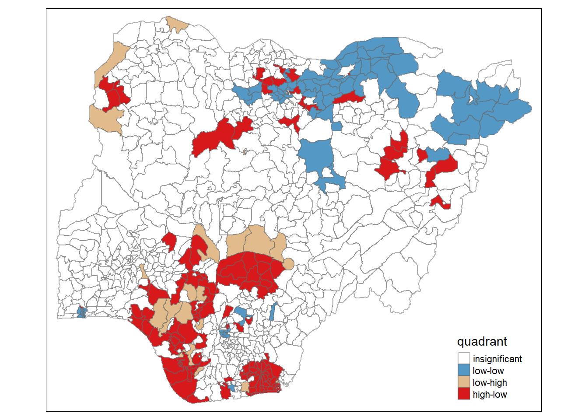
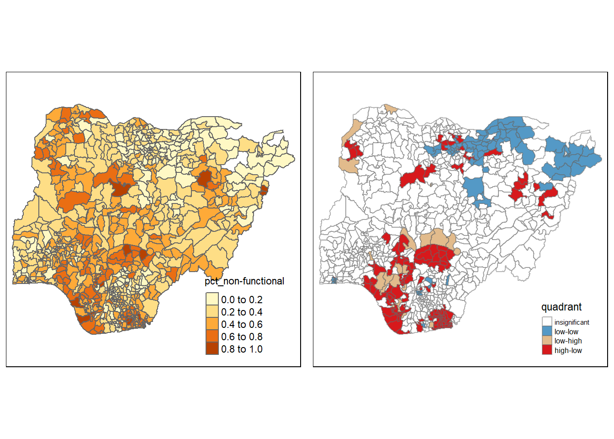

library(sf)
library(tidyverse)
library(tmap)
library(spdep)
library(funModeling)Take_home_Ex01
Objectives
In this exercise, I will apply appropriate global and local measures of spatial Association techniques to reveals the spatial patterns of Not Functional water points in Nigeria.
The task:
Using appropriate tidyr and dplyr methods, derive the proportion of functional and non-functional water point at LGA level.
Combining the geospatial and aspatial data frame into simple feature data frame.
Performing outliers/clusters analysis by using appropriate local measures of spatial association methods.
Performing hotspot areas analysis by using appropriate local measures of spatial association methods.
Thematic Mapping
- Plot maps to show the spatial distribution of functional and non-functional water point rate at LGA level by using appropriate thematic mapping technique provided by tmap package.
Analytical Mapping
- Plot hotspot areas and outliers/clusters maps of functional and non0functional water point rate at LGA level by using appropriate thematic mapping technique provided by tmap package.
Importing the Geospatial data
Two geospatial data sets will be used, they are:
geo_export
nga_admbnda_adm2_osgof_20190417
Importing water point geospatial data
Before importing this data, open the projection component of the geo_export shape file and check the coordinates system first. In this case, the coordinates are in WSG84 (geo / spherical) format, so the crs code is 4326.
wp <- st_read(dsn='geodata',
layer = 'geo_export',
crs = 4326) %>%
filter(clean_coun == 'Nigeria')#| eval: false is only display the codes between 41-44 without running the code. Note that by default, eval: true is used so you do not have to specify.
Do not confuse rmarkdown way of writing code versus Quarto, refer to link below: https://quarto.org/docs/reference/formats/html.html#execution
If I accidentally push too much data into git, refer to the link below: https://stackoverflow.com/questions/40115723/undo-git-commit-in-rstudio-that-is-too-big-to-push
st_geometry(wp)st_crs(wp)To list all the variables in a data frame
str(wp)
ls(wp)Be warned: Avoid performing transformation if you plan to use st_intersects() of sf package in the later stage of the geoprocessing. This is because st_intersects() only works correctly if the geospatial data are in geographic coordinate system (i.e. wgs84)
write_rds(wp, 'geodata/wp_nga.rds')Importing Nigeria LGA BOUNDARY data
Now, we are going to import the LGA boundary data into R environment by using the code chunk below.
nga <- st_read(dsn='geodata',
layer='geoBoundaries-NGA-ADM2',
crs='4326')nga <- st_set_crs(nga, 4326)
st_crs(nga)glimpse(nga)qtm(nga, 'shapeName') +
tm_layout(legend.outside = TRUE)To verify the number of planning areas in nga and to check the first 50 entries to check for signs of spelling errors
dplyr::count(nga, shapeName, sort = TRUE) %>% print(n=50)Data Wrangling
Recoding NA values into string
In the code chunk below, replace_na() is used to recode all the NA values in status_cle field into Unknown.
wp_nga <- read_rds('geodata/wp_nga.rds') To print the first 50 observations
#wp %>% select(status_id) %>% print(n=50)Value_counts() equivalent , before replace NA with Unknown
dplyr::count(wp_nga, status_cle, sort = TRUE)Read rds file and immediately transform NA values of ‘status_cle’ into ‘Unknown’ upon reading
wp_nga <- read_rds('geodata/wp_nga.rds') %>%
mutate(status_cle = replace_na(status_cle, 'Unknown'))#glimpse(wp_nga)Check the data frame after mutate
dplyr::count(wp_nga, status_cle, sort = TRUE)EDA
In the code chunk below, freq() of funModeling package is used to display the distribution of status_cle field in wp_nga.
freq (data = wp_nga,
input = 'status_cle')Extracting Water Point Data
In this section, we will extract the water point records by using classes in status_cle field.
Extracting functional water point
In the code chunk below, filter() of dplyr is used to select functional water points.
wpt_functional <- wp_nga %>%
filter(status_cle %in%
c('Functional',
'Functional but not in use',
'Functional but needs repair'))Rechecking the visualisation
freq (data = wpt_functional,
input = 'status_cle')Extracting non-functional water point
In the code chunk below, filter() of dplyr is used to select non-functional water points.
wpt_nonfunctional <- wp_nga %>%
filter(status_cle %in%
c("Abandoned/Decommissioned",
"Abandoned",
"Non-Functional",
"Non functional due to dry season",
"Non-Functional due to dry season"))freq (data = wpt_nonfunctional,
input = 'status_cle')Extracting water point with Unknown class
In the code chunk below, filter() of dplyr is used to select water points with unknown status.
wpt_unknown <- wp_nga %>%
filter(status_cle=="Unknown")Performing Point-in-Polygon Count
nga refers to boundary data
wp_nga refers to all water points
wpt-functional refers to functional water points
We will use st_intersects() to find the water points IDs that falls within each of the 774 polygons
st_intersects(nga,wp_nga)Each element in the list tells us the total number of water points (functional or not) in each polygon
lengths(st_intersects(nga,wp_nga))We can use the above method to also find the number of (2) functional, (3) non-functional and (4) unknown functionality water points that lie withing each polygon, and append all 4 lists to the original nga boundary sf data frame, calling it a new object nga_wp.
nga_wp <- nga %>%
mutate('total wpt' = lengths(st_intersects(nga, wp_nga))) %>%
mutate('wpt functional' = lengths(st_intersects(nga, wpt_functional))) %>%
mutate('wpt non-functional' = lengths(st_intersects(nga, wpt_nonfunctional))) %>%
mutate('wpt unknown' = lengths(st_intersects(nga,wpt_unknown))) Saving the Analytical Data Table
We would like to compute the percentage of functional, non-functional and unknown water points
*remember to use back tick for variables with space between the words
#| eval: false
nga_wp <- nga_wp %>%
mutate('pct_functional' = `wpt functional`/ `total wpt`) %>%
mutate('pct_non-functional' = `wpt non-functional`/ `total wpt`) %>%
mutate('pct_unknown' = `wpt unknown`/ `total wpt`)#nga_wp <- nga_wp %>%
#select(3:4, 9:10, 18:23)write_rds(nga_wp, "geodata/nga_wp1.rds")Before you end this section, please remember to delete away all the raw data and add the code ‘#| eval: false’ to tell R not to evaluate the code chunks.
Notice that the only data file left is nga_wp.rds and it’s file size is aroung 2.1MB.
Visualising the spatial distribution of water points
Seems to be based on “pretty’ style
nga_wp1 <- readRDS('geodata/nga_wp1.rds')
total <- qtm(nga_wp1, 'total wpt') +
tm_layout(legend.height = 0.2,
legend.width = 0.2)
wp_functional <- qtm(nga_wp1, 'wpt functional') +
tm_layout(legend.height = 0.2,
legend.width = 0.2)
wp_nonfunctional <- qtm(nga_wp1, 'wpt non-functional') +
tm_layout(legend.height = 0.2,
legend.width = 0.2)
unknown <- qtm(nga_wp1, 'wpt unknown') +
tm_layout(legend.height = 0.2,
legend.width = 0.2)
tmap_arrange(total, wp_functional, wp_nonfunctional, unknown,
asp=1, ncol=2)
Plotting the basemap
tm_shape(nga_wp1) +
tm_polygons()1 Global Spatial Autocorrelation
1.1.1 Computing Contiguity Spatial Weights (Contiguity: Queen)
wm_q <- poly2nb(nga_wp1, queen=TRUE)
summary(wm_q)Neighbour list object:
Number of regions: 774
Number of nonzero links: 4440
Percentage nonzero weights: 0.7411414
Average number of links: 5.736434
1 region with no links:
86
Link number distribution:
0 1 2 3 4 5 6 7 8 9 10 11 12 14
1 2 14 57 125 182 140 122 72 41 12 4 1 1
2 least connected regions:
138 560 with 1 link
1 most connected region:
508 with 14 linksA total of 4440 neighbours links, there is one region (86) without neighbour. Region 508 has 14 neighbours. Most regions have about 4 to 7 neighbours.
1.1.2 Computing spatial weights object (Queen, style = ‘W’) using nb2listw()
rswm_q <- nb2listw(wm_q,
style = "W",
zero.policy=TRUE)
summary(rswm_q, zero.policy = TRUE)Characteristics of weights list object:
Neighbour list object:
Number of regions: 774
Number of nonzero links: 4440
Percentage nonzero weights: 0.7411414
Average number of links: 5.736434
1 region with no links:
86
Link number distribution:
0 1 2 3 4 5 6 7 8 9 10 11 12 14
1 2 14 57 125 182 140 122 72 41 12 4 1 1
2 least connected regions:
138 560 with 1 link
1 most connected region:
508 with 14 links
Weights style: W
Weights constants summary:
n nn S0 S1 S2
W 773 597529 773 285.0658 3198.414glimpse(rswm_q)Taking a look at the distribution of pct_non-functional water pumps
hist(nga_wp1$`pct_non-functional`,
freq=TRUE,
breaks= 'Sturges',
xlab= "pct of non-functional water pumps"
)
#abline(v = 0, col="red")1.1.3 Global Spatial Autocorrelation: Moran’s I
moran.test(nga_wp1$`pct_non-functional`,
listw=rswm_q,
zero.policy=TRUE,
na.action=na.omit)
Moran I test under randomisation
data: nga_wp1$`pct_non-functional`
weights: rswm_q
omitted: 3, 86, 241, 250, 252, 261, 400, 406, 447, 473, 492, 507, 526
Moran I statistic standard deviate = 21.072, p-value < 2.2e-16
alternative hypothesis: greater
sample estimates:
Moran I statistic Expectation Variance
0.4637998765 -0.0013157895 0.0004872236 There are 13 regions excluded as there are no water pumps there.
The p-value of the Global Moran’ I statistics is less than 0.05, we have enough statistical evidence to reject the null hypothesis and conclude that there are signs of clustering (Moran I statistic = + 0.4637) in non-functional water pumps.
1.1.4 Global Spatial Autocorrelation: Monte Carlo Moran’s I
set.seed(1234)
bperm = moran.mc(nga_wp1$`pct_non-functional`,
listw=rswm_q,
nsim=999,
zero.policy= TRUE,
na.action=na.omit)
bperm
Monte-Carlo simulation of Moran I
data: nga_wp1$`pct_non-functional`
weights: rswm_q
omitted: 3, 86, 241, 250, 252, 261, 400, 406, 447, 473, 492, 507, 526
number of simulations + 1: 1000
statistic = 0.46319, observed rank = 1000, p-value = 0.001
alternative hypothesis: greater1.1.5 Visualising Monte Carlo Moran’s I
summary(bperm$res[1:999]) Min. 1st Qu. Median Mean 3rd Qu. Max.
-0.078481 -0.015510 -0.001631 -0.001159 0.013105 0.084198 hist(bperm$res,
freq=TRUE,
breaks= 20,
xlab= "Simulated Moran's I"
)
abline(v = -0.001159, col="red")
Since the Monte Carlo Global Moran’ I statistic = 0.46319 and the p-value is 0.001, we can see that it lies on the extreme right side of this chart. It would mean that the Moran I statistic value obtained is much higher than what is expected by chance, and hence clustering is highly likely.
2 Spatial Correlogram
2.1 Compute Moran’s I correlogram
Create a new data frame without NA rows else sp.correlogram() cannot work.
nga_wpnona <- nga_wp1 %>% drop_na()Re define my neighbours
wm_qnona <- poly2nb(nga_wpnona, queen=TRUE)
summary(wm_qnona)Neighbour list object:
Number of regions: 761
Number of nonzero links: 4348
Percentage nonzero weights: 0.750793
Average number of links: 5.713535
Link number distribution:
1 2 3 4 5 6 7 8 9 10 11 12 14
4 16 57 122 177 137 121 71 39 11 4 1 1
4 least connected regions:
136 497 513 547 with 1 link
1 most connected region:
496 with 14 linksA total of 4348 neighbours links. Region 496 has most neighbours, 14 in total. Most regions have about 4 to 7 neighbours.
rswm_qnona <- nb2listw(wm_qnona,
style = "W",
zero.policy=TRUE)
summary(rswm_qnona, zero.policy = TRUE)Characteristics of weights list object:
Neighbour list object:
Number of regions: 761
Number of nonzero links: 4348
Percentage nonzero weights: 0.750793
Average number of links: 5.713535
Link number distribution:
1 2 3 4 5 6 7 8 9 10 11 12 14
4 16 57 122 177 137 121 71 39 11 4 1 1
4 least connected regions:
136 497 513 547 with 1 link
1 most connected region:
496 with 14 links
Weights style: W
Weights constants summary:
n nn S0 S1 S2
W 761 579121 761 284.1587 3152.842Re-check my global Moran I after removing all the NA rows
set.seed(1234)
bpermnona = moran.mc(nga_wpnona$`pct_non-functional`,
listw=rswm_qnona,
nsim=999,
zero.policy= TRUE,
na.action=na.omit)
bpermnona
Monte-Carlo simulation of Moran I
data: nga_wpnona$`pct_non-functional`
weights: rswm_qnona
number of simulations + 1: 1000
statistic = 0.4638, observed rank = 1000, p-value = 0.001
alternative hypothesis: greaterMI_corr <- sp.correlogram(wm_qnona,
nga_wpnona$`pct_non-functional`,
order =10 ,
method = "I",
style = "W")
plot(MI_corr)
To check for statistical significance of the spatial auto correlation
print(MI_corr)Spatial correlogram for nga_wpnona$`pct_non-functional`
method: Moran's I
estimate expectation variance standard deviate Pr(I) two sided
1 (761) 4.6380e-01 -1.3158e-03 4.8722e-04 21.0716 < 2.2e-16
2 (761) 3.6192e-01 -1.3158e-03 2.0856e-04 25.1521 < 2.2e-16
3 (761) 2.5867e-01 -1.3158e-03 1.2600e-04 23.1620 < 2.2e-16
4 (761) 1.4236e-01 -1.3158e-03 9.0162e-05 15.1313 < 2.2e-16
5 (761) 7.3080e-02 -1.3158e-03 7.0431e-05 8.8648 < 2.2e-16
6 (761) 3.6991e-02 -1.3158e-03 5.8783e-05 4.9963 5.843e-07
7 (761) 1.4256e-02 -1.3158e-03 5.1543e-05 2.1690 0.03009
8 (761) -3.5377e-03 -1.3158e-03 4.7008e-05 -0.3241 0.74588
9 (761) -7.8711e-03 -1.3158e-03 4.4566e-05 -0.9820 0.32612
10 (761) 2.6155e-03 -1.3158e-03 4.3423e-05 0.5966 0.55078
1 (761) ***
2 (761) ***
3 (761) ***
4 (761) ***
5 (761) ***
6 (761) ***
7 (761) *
8 (761)
9 (761)
10 (761)
---
Signif. codes: 0 '***' 0.001 '**' 0.01 '*' 0.05 '.' 0.1 ' ' 1Up to order= 7 is statistically significant
2.2 Compute Geary’s C correlogram
set.seed(1234)
bpermgeary = geary.mc(nga_wpnona$`pct_non-functional`,
listw=rswm_qnona,
nsim=999,
zero.policy= TRUE,)
bpermgeary
Monte-Carlo simulation of Geary C
data: nga_wpnona$`pct_non-functional`
weights: rswm_qnona
number of simulations + 1: 1000
statistic = 0.5308, observed rank = 1, p-value = 0.001
alternative hypothesis: greaterGC_corr <- sp.correlogram(wm_qnona,
nga_wpnona$`pct_non-functional`,
order =10 ,
method = "C",
style = "W")
plot(GC_corr)
print(GC_corr)Spatial correlogram for nga_wpnona$`pct_non-functional`
method: Geary's C
estimate expectation variance standard deviate Pr(I) two sided
1 (761) 0.53079558 1.00000000 0.00056121 -19.8062 < 2.2e-16 ***
2 (761) 0.62608410 1.00000000 0.00026528 -22.9573 < 2.2e-16 ***
3 (761) 0.72844057 1.00000000 0.00017413 -20.5794 < 2.2e-16 ***
4 (761) 0.84102915 1.00000000 0.00014090 -13.3927 < 2.2e-16 ***
5 (761) 0.91650327 1.00000000 0.00012412 -7.4945 6.653e-14 ***
6 (761) 0.95690970 1.00000000 0.00012367 -3.8748 0.0001067 ***
7 (761) 0.98273231 1.00000000 0.00014054 -1.4566 0.1452350
8 (761) 1.00699356 1.00000000 0.00016051 0.5520 0.5809415
9 (761) 1.00012124 1.00000000 0.00017366 0.0092 0.9926595
10 (761) 0.97652609 1.00000000 0.00015216 -1.9030 0.0570397 .
---
Signif. codes: 0 '***' 0.001 '**' 0.01 '*' 0.05 '.' 0.1 ' ' 13 Cluster and Outlier Analysis
3.1 Computing local Moran’s I
localMI <- localmoran(nga_wpnona$`pct_non-functional`,rswm_qnona)
head(localMI) Ii E.Ii Var.Ii Z.Ii Pr(z != E(Ii))
1 0.6851464 -0.0008294518 0.15704910 1.7309763 0.083455993
2 0.4543190 -0.0005017373 0.12687496 1.2768864 0.201642361
3 0.2355954 -0.0016465926 0.17730063 0.5634254 0.573145224
4 1.0728844 -0.0007449612 0.11270153 3.1980811 0.001383454
5 0.5911089 -0.0010566011 0.11383918 1.7550811 0.079245442
6 -0.2038485 -0.0001770915 0.02230919 -1.3636036 0.1726923723.2 Append local Moran’s I to nga_wpnona shapefile
nga_wpnona.localMI <- cbind(nga_wpnona,localMI)%>%
rename(Pr.Ii = Pr.z....E.Ii..)
#rename the last column
#colnames(bperm.df)[1] <- 'res'
head(nga_wpnona.localMI)Simple feature collection with 6 features and 17 fields
Geometry type: MULTIPOLYGON
Dimension: XY
Bounding box: xmin: 3.005022 ymin: 4.888055 xmax: 8.417316 ymax: 9.232154
Geodetic CRS: WGS 84
shapeName Level shapeID shapeGroup shapeType
1 Aba North ADM2 NGA-ADM2-72505758B79815894 NGA ADM2
2 Aba South ADM2 NGA-ADM2-72505758B67905963 NGA ADM2
3 Abaji ADM2 NGA-ADM2-72505758B61968000 NGA ADM2
4 Abak ADM2 NGA-ADM2-72505758B39432389 NGA ADM2
5 Abakaliki ADM2 NGA-ADM2-72505758B36739173 NGA ADM2
6 Abeokuta North ADM2 NGA-ADM2-72505758B86358915 NGA ADM2
total.wpt wpt.functional wpt.non.functional wpt.unknown pct_functional
1 17 7 9 1 0.4117647
2 71 29 35 7 0.4084507
3 57 23 34 0 0.4035088
4 48 23 25 0 0.4791667
5 233 82 42 109 0.3519313
6 34 16 15 3 0.4705882
pct_non.functional pct_unknown Ii E.Ii Var.Ii Z.Ii
1 0.5294118 0.05882353 0.6851464 -0.0008294518 0.15704910 1.7309763
2 0.4929577 0.09859155 0.4543190 -0.0005017373 0.12687496 1.2768864
3 0.5964912 0.00000000 0.2355954 -0.0016465926 0.17730063 0.5634254
4 0.5208333 0.00000000 1.0728844 -0.0007449612 0.11270153 3.1980811
5 0.1802575 0.46781116 0.5911089 -0.0010566011 0.11383918 1.7550811
6 0.4411765 0.08823529 -0.2038485 -0.0001770915 0.02230919 -1.3636036
Pr.Ii geometry
1 0.083455993 MULTIPOLYGON (((7.401109 5....
2 0.201642361 MULTIPOLYGON (((7.334479 5....
3 0.573145224 MULTIPOLYGON (((7.045872 9....
4 0.001383454 MULTIPOLYGON (((7.811244 5....
5 0.079245442 MULTIPOLYGON (((8.4109 6.28...
6 0.172692372 MULTIPOLYGON (((3.143903 7....3.3 Mapping both local Moran’s I and its p-value
localMI.map <- tm_shape(nga_wpnona.localMI)+
tm_fill(col='Ii',
style="pretty",
palette = "RdBu",
title = "local Moran statistics") +
tm_borders(alpha = 0.5) +
tm_layout(main.title = "Local Moran' I statistic",
main.title.size=0.8,
legend.height = 0.2,
legend.width = 0.2)
pvalue.map <- tm_shape(nga_wpnona.localMI)+
tm_fill(col='Pr.Ii',
breaks = c(-Inf,0.001,0.01,0.05,0.1,Inf),
palette = "-Blues",
title = "local Moran statistics") +
tm_borders(alpha = 0.5) +
tm_layout(main.title = "Local Moran' p-values",
main.title.size=0.8,
legend.height = 0.2,
legend.width = 0.2)
tmap_arrange(localMI.map, pvalue.map, asp=1, ncol=2)
3.4 Steps in creating a LISA Cluster Map
3.4.1 Plotting the Moran scatterplot
nci <- moran.plot(nga_wpnona$`pct_non-functional`,
rswm_qnona,
labels=as.character(nga_wpnona$shapeName),
xlab = "Pct Non-functional pumps",
ylab="Spatially Lag Pct Non-functional pumps")
But we do not know which values are significant and which values are not. We also do not need to standardise the Pct non-functional pumps as % is already considered as standardised.
3.4.2 Preparing LISA map classes
quadrant <- vector(mode = "numeric", length = nrow(localMI))
quadrant [1] 0 0 0 0 0 0 0 0 0 0 0 0 0 0 0 0 0 0 0 0 0 0 0 0 0 0 0 0 0 0 0 0 0 0 0 0 0
[38] 0 0 0 0 0 0 0 0 0 0 0 0 0 0 0 0 0 0 0 0 0 0 0 0 0 0 0 0 0 0 0 0 0 0 0 0 0
[75] 0 0 0 0 0 0 0 0 0 0 0 0 0 0 0 0 0 0 0 0 0 0 0 0 0 0 0 0 0 0 0 0 0 0 0 0 0
[112] 0 0 0 0 0 0 0 0 0 0 0 0 0 0 0 0 0 0 0 0 0 0 0 0 0 0 0 0 0 0 0 0 0 0 0 0 0
[149] 0 0 0 0 0 0 0 0 0 0 0 0 0 0 0 0 0 0 0 0 0 0 0 0 0 0 0 0 0 0 0 0 0 0 0 0 0
[186] 0 0 0 0 0 0 0 0 0 0 0 0 0 0 0 0 0 0 0 0 0 0 0 0 0 0 0 0 0 0 0 0 0 0 0 0 0
[223] 0 0 0 0 0 0 0 0 0 0 0 0 0 0 0 0 0 0 0 0 0 0 0 0 0 0 0 0 0 0 0 0 0 0 0 0 0
[260] 0 0 0 0 0 0 0 0 0 0 0 0 0 0 0 0 0 0 0 0 0 0 0 0 0 0 0 0 0 0 0 0 0 0 0 0 0
[297] 0 0 0 0 0 0 0 0 0 0 0 0 0 0 0 0 0 0 0 0 0 0 0 0 0 0 0 0 0 0 0 0 0 0 0 0 0
[334] 0 0 0 0 0 0 0 0 0 0 0 0 0 0 0 0 0 0 0 0 0 0 0 0 0 0 0 0 0 0 0 0 0 0 0 0 0
[371] 0 0 0 0 0 0 0 0 0 0 0 0 0 0 0 0 0 0 0 0 0 0 0 0 0 0 0 0 0 0 0 0 0 0 0 0 0
[408] 0 0 0 0 0 0 0 0 0 0 0 0 0 0 0 0 0 0 0 0 0 0 0 0 0 0 0 0 0 0 0 0 0 0 0 0 0
[445] 0 0 0 0 0 0 0 0 0 0 0 0 0 0 0 0 0 0 0 0 0 0 0 0 0 0 0 0 0 0 0 0 0 0 0 0 0
[482] 0 0 0 0 0 0 0 0 0 0 0 0 0 0 0 0 0 0 0 0 0 0 0 0 0 0 0 0 0 0 0 0 0 0 0 0 0
[519] 0 0 0 0 0 0 0 0 0 0 0 0 0 0 0 0 0 0 0 0 0 0 0 0 0 0 0 0 0 0 0 0 0 0 0 0 0
[556] 0 0 0 0 0 0 0 0 0 0 0 0 0 0 0 0 0 0 0 0 0 0 0 0 0 0 0 0 0 0 0 0 0 0 0 0 0
[593] 0 0 0 0 0 0 0 0 0 0 0 0 0 0 0 0 0 0 0 0 0 0 0 0 0 0 0 0 0 0 0 0 0 0 0 0 0
[630] 0 0 0 0 0 0 0 0 0 0 0 0 0 0 0 0 0 0 0 0 0 0 0 0 0 0 0 0 0 0 0 0 0 0 0 0 0
[667] 0 0 0 0 0 0 0 0 0 0 0 0 0 0 0 0 0 0 0 0 0 0 0 0 0 0 0 0 0 0 0 0 0 0 0 0 0
[704] 0 0 0 0 0 0 0 0 0 0 0 0 0 0 0 0 0 0 0 0 0 0 0 0 0 0 0 0 0 0 0 0 0 0 0 0 0
[741] 0 0 0 0 0 0 0 0 0 0 0 0 0 0 0 0 0 0 0 0 0Next, derive the lagged variable of interest (Pct Non-functional pumps) and center the spatially lagged variable around its mean
nga_wpnona$lag_PctNonFunc <- lag.listw(rswm_qnona, nga_wpnona$`pct_non-functional`)
DV <- nga_wpnona$lag_PctNonFunc - mean(nga_wpnona$lag_PctNonFunc)
class(DV)[1] "numeric"Center the local Moran's around the mean
The first col [ , 1] of the localMI matrix contains LocalMoran's I values
LM_I <- localMI[,1] - mean(localMI[,1])
class(LM_I)[1] "numeric"Next, we will set a statistical significance level for the local Moran.
signif <- 0.05These four command lines define the low-low (1), low-high (2), high-low (3) and high-high (4) categories.
Here, are we using filters? Using DV and LM_I vectors to assign value of 1 to quadrant vector (init as all 0)
DV < 0 means GDPPC spatial lag is lower than mean.; spatial lag is low?
LM_I < 0 means Local Moran I value is less than mean. LISA of an observation gives an indication of the extent of significant spatial clustering of similar values around that observation. When LM_I > 0 means clustering of HH or LL values. When LM_I < 0 means dispersion of HL or LH values.
quadrant[DV < 0 & LM_I > 0] <- 1 # low-low
quadrant [1] 0 0 0 0 1 0 0 0 0 0 0 0 0 0 0 0 0 0 0 0 1 1 0 0 0 0 0 0 0 0 1 1 0 0 0 0 0
[38] 0 0 0 0 0 0 0 0 0 0 1 0 1 0 0 1 0 1 0 0 0 0 0 1 0 0 0 0 0 0 0 0 0 0 0 0 1
[75] 0 0 0 0 0 0 0 1 0 1 1 0 0 0 1 0 0 0 0 0 0 0 0 0 1 0 0 0 0 0 0 1 0 1 1 0 0
[112] 0 1 0 1 0 0 0 0 0 0 0 0 0 1 0 0 0 0 1 0 0 0 0 0 0 0 1 0 0 1 0 0 1 1 0 0 0
[149] 0 0 1 0 0 1 0 0 0 1 0 0 0 0 0 1 0 1 0 1 0 0 0 0 0 0 0 0 0 0 0 0 0 0 0 0 0
[186] 0 1 1 0 0 1 1 1 0 0 0 0 0 0 0 0 0 0 0 1 0 0 0 0 0 0 1 1 0 1 1 1 0 0 0 1 0
[223] 1 0 1 0 1 0 0 0 1 1 0 0 0 1 0 0 0 0 1 0 0 0 0 0 0 0 0 0 0 0 1 0 0 0 0 1 0
[260] 1 1 0 0 0 1 0 1 0 0 0 0 0 0 0 0 0 0 0 0 0 0 0 0 0 0 0 1 1 0 0 0 0 0 0 0 0
[297] 0 0 0 1 0 0 0 0 1 0 0 0 0 0 0 0 0 0 0 0 0 1 0 1 0 0 0 0 0 0 0 0 0 0 0 0 0
[334] 0 0 0 0 0 0 0 0 0 0 1 0 0 0 0 0 0 0 0 0 0 0 0 0 0 0 0 0 0 0 0 0 0 0 0 0 0
[371] 0 0 1 0 0 1 1 0 0 0 0 1 0 0 0 0 0 1 0 0 0 1 0 0 0 0 0 0 0 0 0 1 1 0 1 1 0
[408] 0 0 0 0 0 0 1 0 0 0 0 0 0 0 0 0 0 1 0 1 0 0 0 0 1 0 0 1 1 0 0 1 1 0 0 0 1
[445] 0 0 0 0 0 0 0 1 1 0 0 0 0 0 0 0 0 0 1 1 1 0 1 0 1 1 0 0 1 0 1 1 0 0 0 0 0
[482] 0 0 0 1 0 0 0 0 1 0 1 0 0 0 0 1 0 0 0 0 1 1 0 0 0 0 0 0 0 0 0 1 0 0 1 1 0
[519] 0 1 0 0 1 1 0 0 0 0 1 0 0 0 0 0 0 0 0 0 0 0 0 0 0 0 0 0 0 0 0 0 0 0 0 0 0
[556] 0 0 1 0 0 0 0 0 0 0 0 0 1 0 0 0 0 0 0 0 0 1 0 0 0 0 0 0 0 0 0 0 0 1 0 0 0
[593] 0 0 0 0 0 0 0 0 0 0 0 0 0 0 0 0 0 1 0 0 0 0 0 0 0 0 0 0 0 0 0 0 0 0 0 0 0
[630] 0 0 1 1 0 0 0 0 0 0 0 1 1 0 0 0 0 0 0 1 0 0 0 0 0 0 0 0 0 0 0 0 0 0 0 0 0
[667] 0 0 1 0 0 0 0 0 0 1 0 0 0 1 0 0 1 0 1 0 0 0 0 1 0 1 1 1 1 0 0 0 0 0 0 1 1
[704] 0 0 0 0 0 0 0 0 0 0 0 0 0 0 1 0 0 0 0 0 0 0 0 0 0 0 0 1 0 0 0 0 0 0 0 0 0
[741] 0 0 0 0 0 0 0 0 0 0 0 0 1 1 1 0 0 0 0 0 0quadrant[DV > 0 & LM_I < 0] <- 2 # low- high
quadrant[DV < 0 & LM_I < 0] <- 3 # high- low
quadrant[DV > 0 & LM_I > 0] <- 4 # high-high
quadrant [1] 4 2 2 4 1 3 3 3 2 3 2 4 2 3 3 3 2 2 3 4 1 1 2 2 3 2 3 3 3 4 1 1 2 3 4 4 4
[38] 3 4 4 2 2 2 2 2 3 2 1 2 1 3 2 1 3 1 3 2 3 4 4 1 2 2 2 2 2 3 3 2 2 3 3 2 1
[75] 2 3 3 3 3 3 2 1 2 1 1 3 3 3 1 3 3 4 3 3 3 3 3 3 1 3 2 2 3 2 2 1 4 1 1 4 2
[112] 3 1 2 1 2 2 2 4 3 2 2 2 4 1 2 3 3 4 1 2 4 2 2 4 3 3 1 4 3 1 3 3 1 1 4 2 3
[149] 3 2 1 2 3 1 3 4 3 1 3 2 2 4 3 1 2 1 4 1 2 3 2 2 2 3 3 2 2 2 2 3 4 4 4 2 2
[186] 2 1 1 3 2 1 1 1 3 4 4 4 4 4 4 4 3 4 4 1 4 4 4 4 2 2 1 1 2 1 1 1 2 2 2 1 4
[223] 1 3 1 2 1 3 3 3 1 1 3 2 3 1 3 2 3 3 1 4 3 4 3 3 4 2 2 3 2 2 1 3 3 2 2 1 2
[260] 1 1 2 4 3 1 3 1 2 3 3 3 3 3 4 3 3 3 3 4 4 2 4 4 4 3 3 1 1 3 2 3 2 2 2 2 2
[297] 4 2 2 1 4 2 3 3 1 4 3 2 2 3 3 3 3 4 4 2 2 1 2 1 3 2 2 2 4 3 4 4 4 3 3 2 2
[334] 4 4 2 2 2 4 2 2 2 3 1 4 3 4 3 4 2 2 2 2 2 3 3 3 2 2 2 2 3 2 4 4 2 3 3 4 3
[371] 3 3 1 2 3 1 1 3 3 2 2 1 3 3 3 3 4 1 2 4 2 1 3 2 3 2 3 3 2 2 3 1 1 3 1 1 3
[408] 3 2 3 2 3 2 1 3 3 2 3 4 2 2 2 3 2 1 3 1 2 4 2 2 1 2 2 1 1 2 2 1 1 3 3 2 1
[445] 2 4 2 3 3 2 3 1 1 2 3 3 2 3 2 3 2 2 1 1 1 2 1 2 1 1 2 4 1 2 1 1 3 3 3 2 3
[482] 2 2 2 1 3 2 4 2 1 3 1 2 4 2 2 1 4 2 4 4 1 1 2 4 3 3 2 3 4 4 4 1 2 2 1 1 3
[519] 3 1 3 3 1 1 4 4 4 3 1 3 3 2 2 4 4 3 2 4 2 3 2 3 4 2 2 4 4 4 2 2 3 2 2 3 3
[556] 2 4 1 2 3 2 3 3 3 4 3 3 1 4 4 4 3 4 4 4 4 1 3 4 2 3 3 4 2 3 4 4 3 1 3 4 4
[593] 2 3 4 3 2 3 2 2 3 3 3 4 3 3 4 2 3 1 2 3 4 2 2 2 4 2 3 3 2 2 3 2 3 3 2 2 3
[630] 4 2 1 1 3 3 2 3 3 2 3 1 1 3 3 3 2 2 4 1 4 2 3 2 2 2 4 2 3 2 2 2 3 3 3 3 3
[667] 2 2 1 2 3 3 3 3 4 1 3 3 4 1 2 2 1 3 1 2 3 2 4 1 2 1 1 1 1 2 3 3 3 3 3 1 1
[704] 2 4 2 4 4 2 4 2 4 2 4 3 2 2 1 2 4 4 2 2 4 4 2 2 2 3 3 1 4 4 4 3 3 3 2 2 2
[741] 2 4 4 2 3 2 3 4 2 3 3 3 1 1 1 3 2 2 3 3 2- lastly, place non-significant Moran in the category 0
quadrant[localMI[,5]>signif] <- 0
quadrant [1] 0 0 0 4 0 0 0 0 0 0 0 0 0 0 0 0 0 0 0 4 0 0 0 0 0 0 0 0 0 0 1 1 0 0 4 4 0
[38] 0 4 0 0 0 0 0 0 3 0 1 0 1 0 0 1 0 0 0 0 0 4 4 1 0 2 0 0 0 0 0 0 0 0 0 0 1
[75] 0 0 0 0 3 0 0 1 2 1 0 0 0 0 1 0 0 4 0 0 0 0 0 0 0 0 0 0 3 0 0 0 0 1 1 4 0
[112] 0 0 0 0 0 0 0 4 0 0 0 0 4 0 0 0 0 4 1 0 4 0 0 0 0 0 1 0 3 0 0 3 1 0 0 0 0
[149] 0 0 0 0 0 1 3 4 0 1 0 2 0 0 0 1 0 0 4 1 0 0 0 0 0 0 0 0 0 0 0 0 4 4 0 0 0
[186] 0 1 0 0 0 0 1 0 0 0 4 4 4 4 4 4 0 0 4 0 4 4 4 4 2 0 0 0 0 0 0 0 0 0 0 0 4
[223] 1 0 1 2 1 0 0 0 1 0 0 0 0 0 0 0 3 0 0 4 0 0 3 0 0 0 0 0 0 0 1 0 0 0 0 0 0
[260] 0 0 0 4 0 1 3 1 0 0 0 0 0 0 0 0 0 0 0 4 4 0 4 4 4 0 0 0 1 0 0 3 0 0 0 0 0
[297] 0 0 0 0 0 0 0 0 0 4 0 0 0 0 0 0 0 4 4 2 0 0 0 1 0 0 0 0 4 0 4 4 4 0 0 0 0
[334] 4 0 0 0 0 0 0 0 0 0 0 0 0 4 0 0 0 0 0 0 0 0 0 0 0 0 0 0 0 0 0 4 0 3 0 4 0
[371] 0 0 0 0 0 1 1 0 0 0 0 1 0 0 0 0 4 1 0 0 2 1 0 0 0 0 0 0 0 0 0 1 0 3 1 1 0
[408] 0 0 0 0 0 0 1 0 0 0 0 0 0 0 2 0 0 1 0 1 0 0 0 2 1 0 0 1 0 0 0 1 0 0 0 0 0
[445] 0 4 0 0 3 0 0 1 1 0 0 0 0 0 0 0 0 2 1 1 1 0 1 0 0 1 0 4 1 2 0 1 0 0 0 0 0
[482] 0 0 0 0 0 0 4 0 1 0 1 0 4 0 0 0 0 0 0 0 1 1 0 0 0 3 2 0 0 4 0 0 0 0 1 0 0
[519] 3 0 3 0 1 1 4 4 4 0 0 0 0 0 0 0 4 3 0 4 0 0 0 0 0 0 0 4 0 4 0 0 0 0 0 0 0
[556] 0 0 0 0 0 0 0 0 0 4 3 0 0 0 0 4 0 4 4 4 4 1 0 4 0 0 0 4 0 0 4 0 0 0 0 4 4
[593] 0 0 4 0 2 0 0 2 0 0 0 4 0 0 4 0 0 1 0 0 4 2 2 2 0 0 0 0 0 0 0 0 0 0 0 0 0
[630] 4 0 0 0 0 0 0 0 0 0 0 1 1 0 0 3 0 0 0 0 4 0 0 0 0 0 4 0 0 0 0 0 3 3 0 0 0
[667] 0 0 1 0 0 0 0 0 4 0 0 0 4 1 0 0 1 0 1 0 0 0 0 0 0 0 1 1 1 2 0 0 3 3 0 0 1
[704] 2 4 2 4 4 2 0 0 4 0 0 0 0 0 1 0 4 4 0 0 0 4 0 0 0 0 0 1 4 4 0 0 0 3 0 0 0
[741] 0 0 4 0 0 0 0 0 0 0 3 0 0 1 1 0 0 0 0 0 0Combining all together
quadrant <- vector(mode="numeric",length=nrow(localMI))
hunan$lag_GDPPC <- lag.listw(rswm_q, hunan$GDPPC)
DV <- hunan$lag_GDPPC - mean(hunan$lag_GDPPC)
LM_I <- localMI[,1]
signif <- 0.05
quadrant[DV <0 & LM_I>0] <- 1
quadrant[DV >0 & LM_I<0] <- 2
quadrant[DV <0 & LM_I<0] <- 3
quadrant[DV >0 & LM_I>0] <- 4
quadrant[localMI[,5]>signif] <- 03.4.3 Plotting LISA Map
nga_wpnona.localMI$quadrant <- quadrant
colours <- c("#ffffff", "#2c7bb6", "#abd9e9", "#fdae61", "#d7191c")
clusters <- c("insignificant", "low-low", "low-high", "high-low", "high-high")
tm_shape(nga_wpnona.localMI) +
tm_fill(col = 'quadrant',
palette= colours[c(sort(unique(quadrant))) + 1],
labels = clusters[c(sort(unique(quadrant))) + 1],
popups.var = c("")) +
tm_view(set.zoom.limits = c(11,17)) +
tm_borders(alpha = 0.5) +
tm_layout(legend.height = 0.2,
legend.width = 0.2)
wp_nonfunctional <- qtm(nga_wpnona, "pct_non-functional") +
tm_layout(legend.width = 0.3,
legend.height = 0.3)
LISAmap <- tm_shape(nga_wpnona.localMI) +
tm_fill(col = 'quadrant',
palette= colours[c(sort(unique(quadrant))) + 1],
labels = clusters[c(sort(unique(quadrant))) + 1],
popups.var = c("")) +
tm_view(set.zoom.limits = c(11,17)) +
tm_borders(alpha = 0.5) +
tm_layout(legend.height = 0.2,
legend.width = 0.2)
tmap_arrange(wp_nonfunctional, LISAmap,
asp = 1, ncol =2)